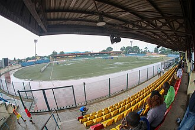
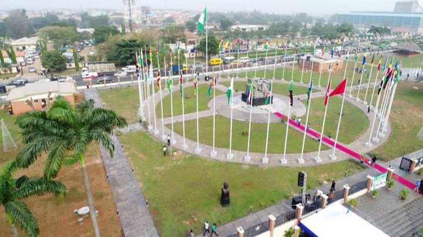
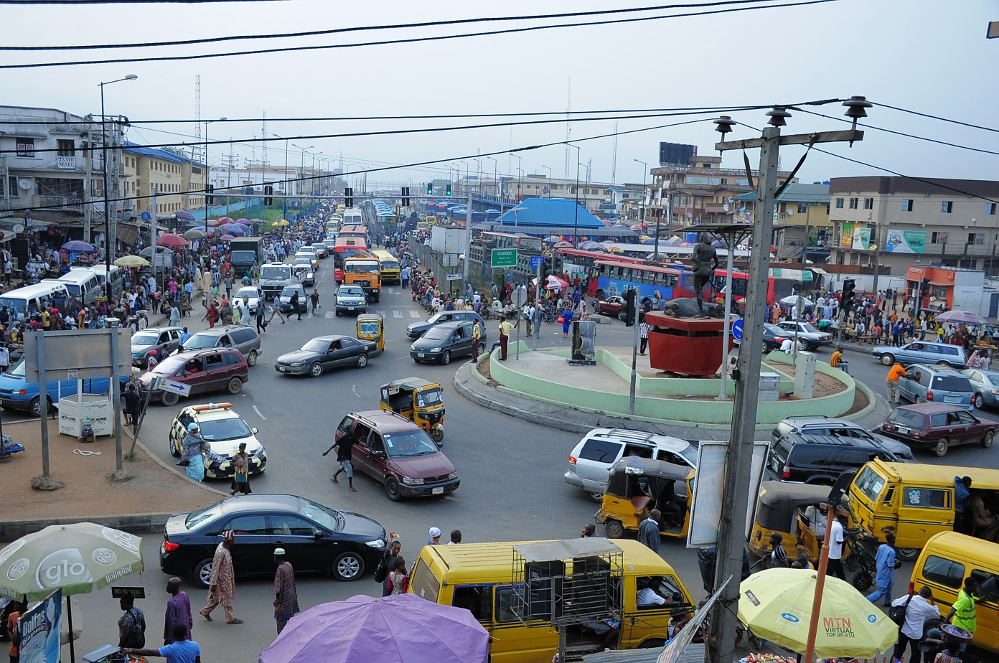

Click on any location below to learn more about its history, culture, and attractions.
Agege Local Government
Origins & Growth

In the heartbeat of Lagos Mainland lies Agege — a bustling, down-to-earth community that tells two stories at
once: the smell of fresh bread rising from neighborhood bakeries, and the roar of football fans echoing from
the local stadium.
• Established as part of colonial decentralization in the 1960s, Agege expanded from farmland into a dense
urban settlement.
• Became a crucial transport hub due to its position along rail and road routes into Lagos City.
Economy & Trade

Agege is the birthplace of Nigeria’s most iconic bread — the soft, stretchy, slightly sweet loaf known as
Agege Bread.
• Renowned for vibrant markets such as Agege Bread and Agboju Market.
• Small factories and workshops produce goods for local commerce.
Culture & Landmarks

Home to Agege Stadium, a popular venue for sports and cultural shows. Agege Stadium keeps the city's sporting
pulse alive.
Together, these two — bread and football — shape the soul of Agege
Back
Alimosho Local Government
Background & Expansion
One of Nigeria’s most populous LGAs, carved out in the 1960s–70s to meet rising housing demands.Rapid urban development but still holds rural pockets on its borders.
Infrastructure & Services
Modern housing estates and major roads (like Owode–Onigbongbo stretch).
Hospitals and schools spread across various towns like Egbeda, Ijegun, Akowonjo.
Demographics & Culture
• A diverse mix of ethnic groups (Yoruba, Igbo, Hausa, and others).
• Hosts festivals like Oro, Egungun masquerades, and annual harvest celebrations.
Back
Ikeja Local Government
Establishment & Administration

• Created in 1967 as the capital of Lagos State.
• Planned administrative city with government offices, judiciary, and ministries.
Business & Economy

• Contains Ikeja City Mall, Computer Village (Africa’s largest ICT market), and Alausa Secretariat.
• Hosts several multinational corporations and major banks.
Johnson Jakande Tinubu (JJT) Park, Alausa

• Opened December 2017, named after former governors Mobolaji Johnson, Lateef Jakande and Bola Tinubu.
• Features & Use:21,880 sqm green space with playground, giant chessboard, fountains, jogging
paths, picnic/rest spots, security & restrooms.
• Good for: Walks, leisure, family visits, events, and photography.
Back
Eti‑Osa Local Government
Heritage & Formation

• Constituents date to the original fishing villages – Island communities that became urban as Lagos expanded
east.
• Administratively formed in the 1970s.
Urbanization & Jet Set Zone
• Encompasses high‑end suburbs like Victoria Island, Lekki Phase 1, and parts of Ajah.
• Features luxury apartments, offices, seafront hotels, and waterfront promenades.
Recreation & Arts
• Hosts cultural centres like Nike Art Gallery, Terra Kulture, and many fine‑dining spots.
• Beaches (Alpha, Oniru) popular for relaxation and events.
Back
Surulere Local Government
History & Identity

• Known as a middle‑class residential area since the 1960s.
• Evolved into a sporting and entertainment community.
Sports Excellence

Built in 1976 under General Gowon and completed by Obasanjo to host FESTAC 77. Inspired by Bulgaria’s Varna
theatre, it’s Nigeria’s premier performing arts centre. Renamed in 2024 in honor of Nobel Laureate Wole
Soyinka.
• Contains the National Stadium (completed 1972) – centre for athletics, soccer, and big events.
• Many renowned athletes and performers call Surulere home.
Culture & Entertainment
• Vibrant nightlife with clubs, lounges, and eateries on Adeniran Ogunsanya.
• Hosts music industry activities and Nollywood talent hubs.
Back
Lekki Local Government
Formation & Expansion

• Carved out from Eti‑Osa to better manage rapid coastal development.
• Transformed from fishing land to upscale residential/business district.
Urban Planning & Residential Estates
• Includes major estates: Chevron, Lekki Gardens, and Ajah phase 2.
• Features modern shopping centres, hospitals, and schools.
Tourism & Conservation
• Visitors enjoy Lekki Conservation Centre (the canopy walkway), beaches, and tourist sports.
• Hosts annual events like Eko Atlantic’s Eko Commission.
Back
Ikorodu Local Government
Historical Roots

• Founded early as a farming and fishing town on Lagos Lagoon’s north shore.
• Pre‑colonial origin traces to the Awori people.
Industrial & Agricultural Mix

• Produces rice, cassava, and vegetables in its hinterlands.
• Hosts growing light‑industry zones and markets.
Growth & Connectivity

• Expanding suburbs like Imota, Agbowa, Igbogbo.
• Road improvements (Ikorodu–Lekki expressway) easing commute to Lagos metropolis.
Back
Mushin Local Government
Early Beginnings

• Grew out of small village and grew quickly after Lagos sprawl in mid‑20th century.
• Became a commercial hub with dense, multi‑story buildings.
Commerce & Vibrancy
• Central Mushin market and Onipanu Market are energetic trading spots.
• Known for tailors, auto repairs, textiles, and second‑hand clothes trade.
Culture & Community
• Music and entertainment scene thrives — many artists, DJs began in Mushin.
• Community holds strong social networks, clubs, and support groups.
Back
Ajeromi Local Government
Origins & Urban Pressure

• Set aside when Lagos State restructured in the 1990s to manage swelling slum populations in Ajegunle.
• Home to Ajegunle, one of West Africa’s largest slum settlements.
Economy & Hardiness
• Bustling informal economy: barter trade, small‑scale manufacturing, service providers.
• Strong entrepreneurial spirit in the community.
Culture & Music
• Cradle of Nigerian music genres like galala and street pop.
• A colourful nightlife, local comedy, and grassroots festivals flourish here.
Back
Epe Local Government
Fishing Heritage

• Originated as a fishing village near Lekki Lagoon.
• Hosts traditional annual fishing festivals, including Okupe (Hermit Crab) festival.
Trade & Agriculture
• A market centre for fish, yams, vegetables and coastal cooking ingredients.
• Boats regularly shuttle catches to Lagos mainland.
Tourism & Eco‑Attractions
• Near landmarks like Epe Mangrove Forest and Omu Resort.
• Gateway to Lekki–Epe migration corridor and ecotourism.
Back
Badagry Local Government
Colonial & Historical Significance

• One of Nigeria’s oldest towns; a major slave‑trading port in the 18th–19th centuries.
• Hosts the Badagry Heritage Museum, Slave Relics Museum, and the “Point of No Return” slave route site.
Crocodile Conservation & Festivals
• Home to sacred Epeh Crocodile Pond.
• Hosts annual Badagry Festival celebrating history, music, dance, and crafts.
Coastal Tourism
• Beach outings to Black Heritage Beach, safe swimming spots on the Atlantic shore.
• Cultural village tours and boat excursions enhance visit.
Back
Oshodi‑Isolo Local Government
From Cocoa Farm to Transit Hub

• Retains name of Osodi tree (‘osodi’ in Yoruba) – once farmland, now crowded transit corridor.
• One of Nigeria’s busiest bus terminals connects to other states.
Market & Transport Economy
• Shaw Market serves many daily customers.
• The Oshodi Bus Terminal is a major driver of jobs and commerce.
Urban Renewal & Challenges

• Lagos State redevelopment drives regular demolitions and rebuilding.
• Population density stresses sanitation, traffic, and housing infrastructure.
Back
Amuwo‑Odofin Local Government
New LGA & Land Reclamation

• Carved out in 1996 from Mushin/Apapa corridors.
• Built on reclaimed Malibu area, now filled with estates and light industries.
Industrial & Logistics Zone
• Includes Apapa–Amuwo industrial corridor, warehouses, small factories, logistics services.
• Hosts some Apapa port spillover infrastructure.
Residential Estates & Builders
• Features military estates (ILORIN Barracks), PDP Estate, Amuwo Millennium Estate.
• Population includes public servants and industrial workers.
Back
Kosofe Local Government
Early Administrative Era

• Created 1989–90 to administer suburban communities like Ketu, Agboyi, Alapere.
• Developed along Lagos–Ikorodu Road corridors.
Commerce & Daily Life
• Houses markets such as Ketu and Mile 12 extension (Agboyi).
• Active street life, with artisans, food vendors, and shops.
Cultural & Social Fabric
• Hosts numerous traditional festivals, Egungun masquerade, social clubs.
• Cosplay of faiths: big churches, mosques, Islamic schools, PYM schools.
Back
Ojo Local Government
A Historic Port Town

• Originally from Isale Ojo fishing town founded centuries ago.
• Developed under colonial influence, once Lagos’s gateway to western hinterland.
Education & University Campus
• Lagos State University (LASU) at Ojo became a major educational hub since 1983.
• Tie between student activity and local economy is strong.
Commerce & Festivals
• Occupies markets like Alaba Rago (electronics), small traders on Idi‑Oro Road.
• Several yearly cultural festivals held by traditional rulers.
Back
Ifako‑Ijaiye Local Government
Origins & Boundaries

• Set up 1996 from Ikeja LGA to manage growing suburban areas.
• Encompasses communities like Ogba, Ogudu, Ifako.
Residential & Transport Links
• Mix of private housing estates and bus terminals for commuters to Lagos CBD.
• Home to the 2012‑built Ojodu Bus Terminus.
Social Amenities & Schools
• Hosts public schools and general hospitals (Ifako General Hospital).
• Small industries and markets provide livelihoods.
Back
Shomolu Local Government
Emergence & Community

• Known for typists, printing presses – nicknamed “Shomolu market for typewriting.”
• Densely populated since mid‑20th century urban sprawl.
Printing & Commerce
• Centre for books, printing, publishing and cut‑paste copy shops.
• High‑volume informal economy near Mile 2 and Igbosere areas.
Social Life
• Bustling residential and commercial streets; renowned for mender roads and choked traffic.
• Rich neighborhood networks organize festivals, youth groups, and religious associations.
Back
Lagos Island Local Government
Formation & Heritage

• Known as “Isale Eko,” it served as the original Lagos city center.
• Historical seat of traditional Yoruba rule and British colonial administration in the 1800s.
Commerce & Culture
• Home to the Oba’s Palace (Iga Idunganran), a symbol of Lagos royalty.
• Hosts Balogun and Idumota markets, major commercial centers in West Africa.
Architecture & Religion
• Preserves colonial-era buildings and churches like the Cathedral Church of Christ.
• Reflects blend of Yoruba heritage and European influence.
Back
Apapa Local Government
History & Maritime Growth

• Developed as a colonial port in the 19th century.
• Became Nigeria’s maritime capital with significant commercial expansion.
Ports & Infrastructure
• Hosts Apapa Port — the largest sea port in Nigeria.
• Major base for shipping companies, oil & gas industries.
Industrial & Trade Facilities
• Features industrial layouts, warehousing complexes, and container terminals.
• Plays a vital role in national and West African trade logistics.
Back
Lagos Mainland Local Government
Colonial Roots & Expansion

• Originally a colonial residential extension.
• Became an educational and intellectual hub post-independence.
Academic & Tech Powerhouse
• Hosts prestigious institutions like UNILAG and Yaba Tech.
• Yaba is a core of Nigeria’s tech ecosystem, filled with startups and incubators.
Urban Living & Heritage
• Includes neighborhoods like Yaba, Onike, and Ebute Metta.
• Known for strong middle-class roots and vibrant culture.
Back